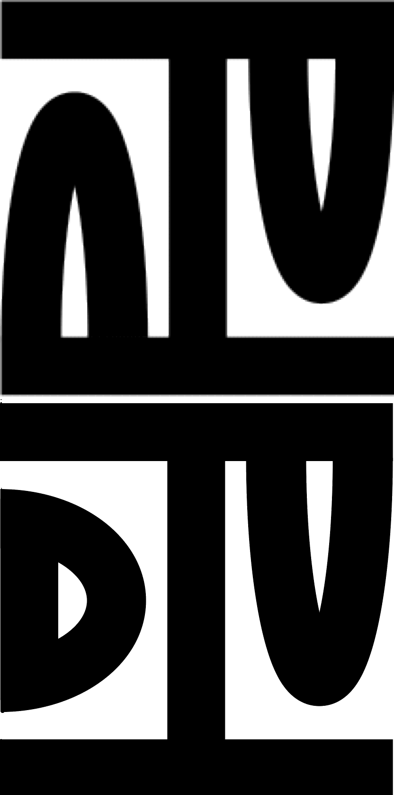

The Past and Present

The TPTP Problem Library
- Problem collection
- Problem statistics
- (Co)Datatypes
- Real-time axioms
- Linking with StarExec
- Repository and archiving
The TSTP Solution Library
- Much akin to the plans for the TPTP problem library
The TDTP Data Library
- Data and tools for applying ML in ATP
- Existing corpora ... Mizar, HOL4, CakeML, JinjaThreads
- Organization
- Plug-and-play framework